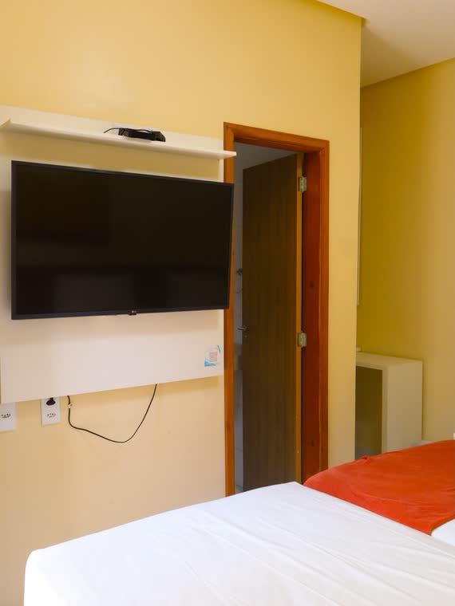
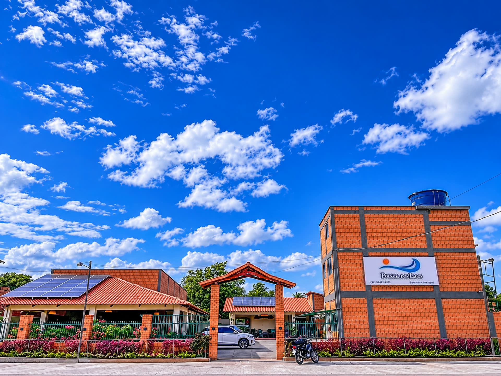
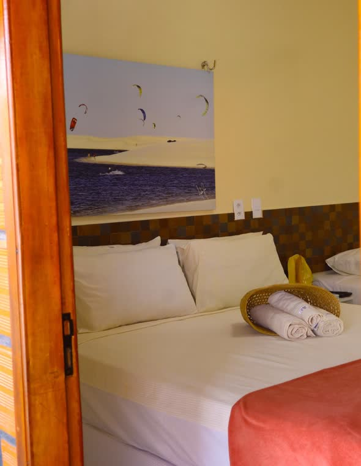
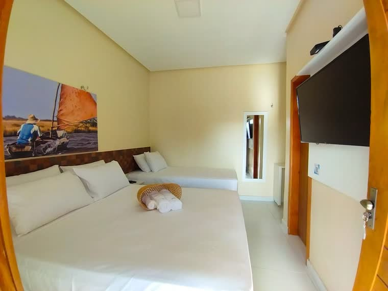

Quarto Individual
1 pessoa
- Café da manhã incluso
- Ar-condicionado e TV
a partir de R$ 190 tarifa promocional
Ver detalhes ou reserve pelo Booking
Avaliações no Google ★★★★★Conforto e aconchego para sua hospedagem
Escolher a Pousada dos Lagos como hospedagem em Paulino Neves é encontrar um lugar novo, limpinho e decorado com muito carinho, com artesanato da região, redes na varanda e quiosques de palha no jardim. Estamos na Rota das Emoções, entre Barreirinhas e Tutóia, pertinho das dunas, rios e lagoas dos Pequenos Lençóis.
Os dias começam com um café da manhã com comidas típicas da região e terminam com tranquilidade para descansar. E a nossa equipe, a mais elogiada pelos hóspedes, está sempre pronta para ajudar com dicas e passeios.
O melhor preço reservando direto.

1 pessoa
a partir de R$ 190 tarifa promocional
Ver detalhes ou reserve pelo Booking
Até 2 pessoas
a partir de R$ 250
Ver detalhes ou reserve pelo Booking
Até 3 pessoas
a partir de R$ 300
Ver detalhes ou reserve pelo BookingOnde estamos
Paulino Neves faz parte da Rota das Emoções e é a porta de entrada dos Pequenos Lençóis Maranhenses: dunas de areia branca, o Rio Novo, a Lagoa do Barreiro Azul e o vento perfeito para o kitesurf. Daqui dá para chegar até Caburé, Atins, Tutóia e Barreirinhas, e as cooperativas de passeio buscam e deixam você na pousada.
Sim, o café da manhã está incluso na diária. É servido em buffet, com comidas típicas da região, todos os dias das 7h às 10h.
Estamos em Paulino Neves, na Rota das Emoções, perto dos Pequenos Lençóis, do Rio Novo e da Lagoa do Barreiro Azul. Daqui dá para visitar Caburé, Atins, Tutóia e Barreirinhas.
Sim, temos estacionamento privativo e gratuito dentro da pousada, sem precisar reservar.
Check-in das 14h às 21h e check-out até as 13h.
Somente o café da manhã. Para almoço e jantar há bares, restaurantes e lanchonetes por perto para ir andando, além de delivery.
Sim! Temos balcão de turismo e as cooperativas de passeio buscam e deixam você na pousada.
Não temos piscina, mas temos jardim, quiosques de palha, redes e churrasqueira. E os rios e lagoas da região são o melhor banho!
Sim, aceitamos pets! Avise na hora da reserva, pois pode haver uma taxa extra.
Sim. Temos acesso para cadeira de rodas, pia mais baixa e vaso sanitário elevado com barras de apoio.
As diárias começam em R$ 190 (tarifa promocional do quarto individual). O Quarto Duplo sai a partir de R$ 250 e o Triplo a partir de R$ 300, todos com café da manhã incluso. Os valores podem mudar conforme a data e a temporada.
Paulino Neves fica no Maranhão, entre Barreirinhas e Tutóia, na Rota das Emoções. Quem vem de São Luís passa por Barreirinhas; quem vem do Piauí ou do Ceará chega por Parnaíba e Tutóia. Na pousada o estacionamento é grátis.
9,1 Fantástico · 44 avaliações no Booking
“A pousada é aconchegante e organizada com um custo-benefício muito bom. Possui uma área comum bem decorada que possibilita momentos de relaxamento fora do quarto. Os funcionários são simpáticos e atenciosos e sempre dispostos a ajudar.”
Adele Avaliação no Booking · ver ↗
“A pousada é limpa, os funcionários são muito profissionais, e o atendimento é muito bom. Vi um capricho e cuidado com detalhes que me deixou bem satisfeita. Tem muitas coisas para se fazer na região, vale a pena passar uns dias lá.”
Lauren Avaliação no Booking · ver ↗
“Atendimento nota dez! Lugar agradável, aconchegante, tranquilidade pra relaxar. Funcionários atenciosos. Inclusive, vamos indicar para amigos essa pousada.”
Alcino Avaliação no Booking · ver ↗